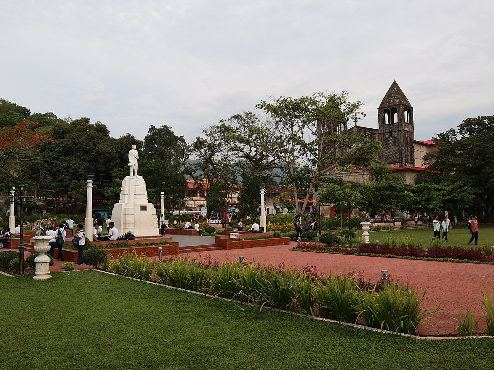

04 / Heritage & Traditions
Our History & Culture
A region of many voices, shaped by Indigenous traditions, maritime connections, and generations of change.

Brief Regional History
Where the past is part of the present
The peninsula is home to Indigenous Subanen communities whose heritage includes weaving, metalwork, and ceremonial traditions such as the sacred Buklog thanksgiving ritual. Their long relationship with the land and neighboring coastal communities is an essential part of the region’s story.
Spanish colonial influence left a visible mark in Zamboanga City. Construction of Fort Pilar began in 1635, and the fortress now houses a National Museum branch. The city is also known for Chavacano, a Spanish-based creole language that remains part of everyday local identity.
Farther north, Dapitan is closely linked to national hero José Rizal, who lived there in exile from 1892 to 1896. Today, its shrine and historic plaza help visitors connect that period with the region’s vibrant living communities.
Cultural Highlights
Traditions worth getting to know
Celebrations
Festivals
-
Zamboanga Hermosa Festival: October celebration honoring Our Lady of the Pillar with a colorful vinta regatta and street dances.
-
Sibug-Sibug Festival: Zamboanga Sibugay’s provincial celebration featuring cultural dances and community events.
-
Kinabayo Festival: July festival in Dapitan City featuring historical pageantry and local traditions.
Artisanal Heritage
Traditional Crafts
-
Yakan Weaving (Tennun): Handwoven textiles known for intricate geometric patterns crafted in Zamboanga City.
-
Subanen Weaving & Basketry: Traditional backstrap loom textiles and woven crafts passed across generations.
-
Vinta Sails & Brasswork: Iconic colorful outrigger boat sails and decorative Mindanao metalwork.
Regional Delicacies
Traditional Foods
-
Satti: Grilled beef or chicken skewers served with hanging rice in a sweet and spicy red sauce.
-
Curacha: Deep-sea spanner crab steamed or cooked in rich spiced coconut Alavar sauce.
-
Knickerbocker: Refreshing local dessert made with fresh tropical fruits, jelly, milk, and ice cream.